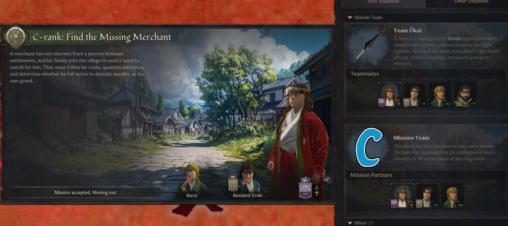
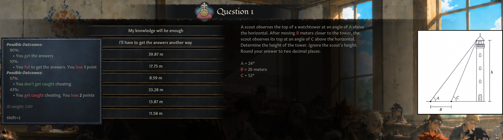
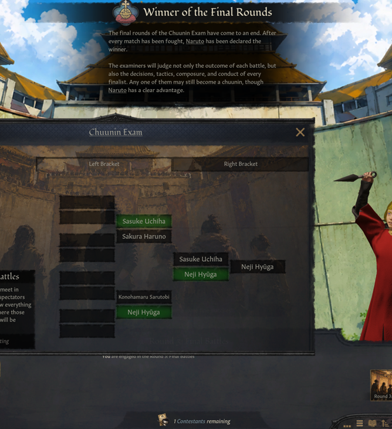
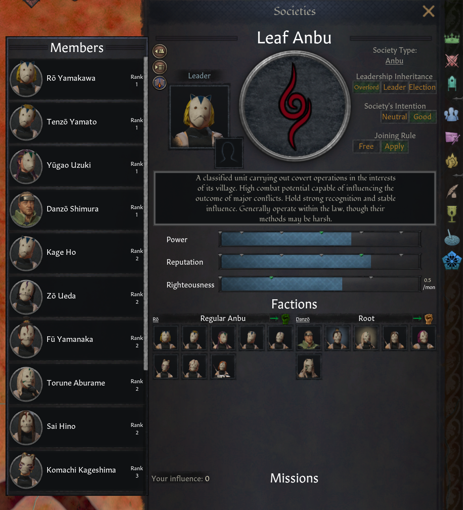
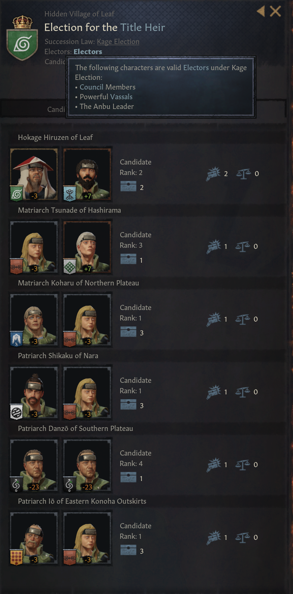
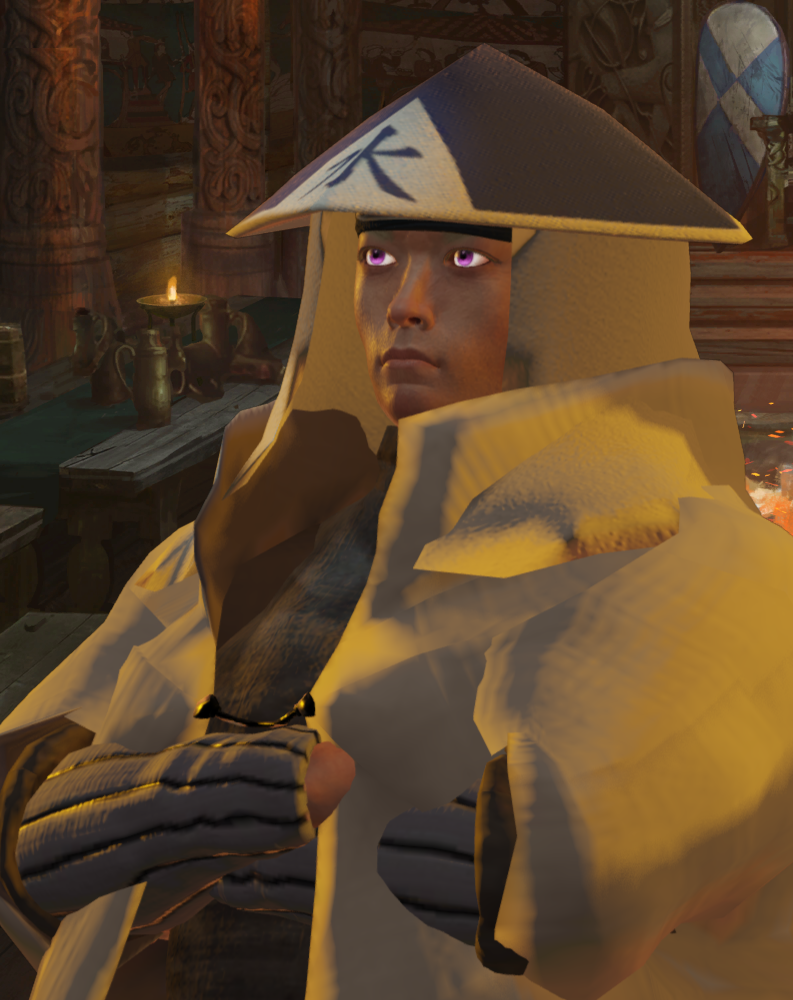
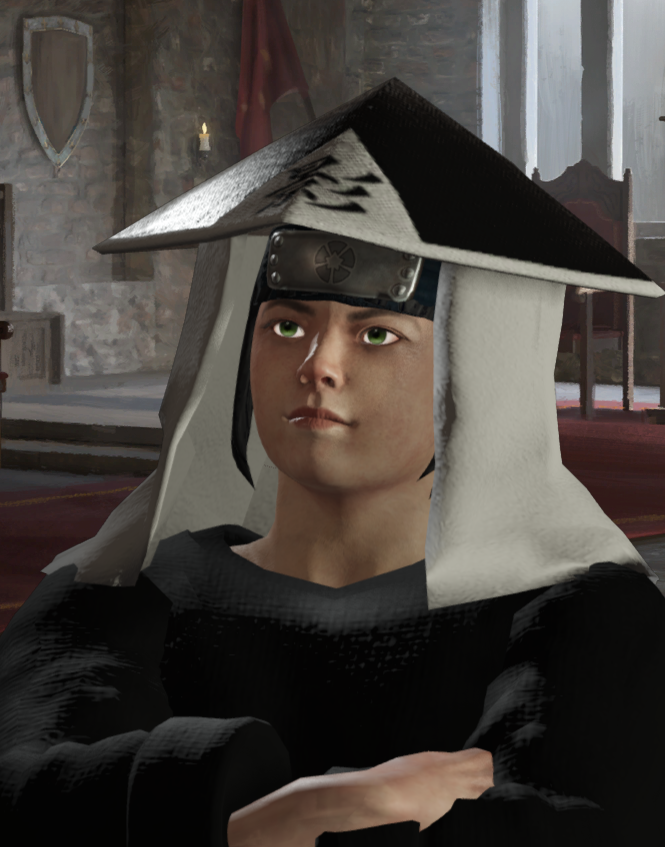
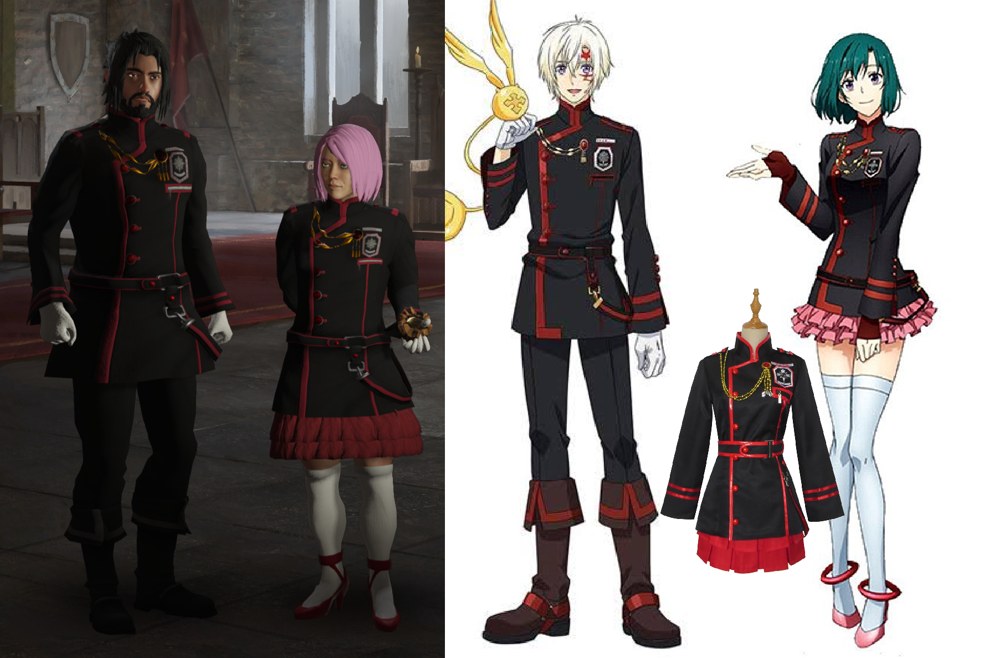

Introduction
Good morning, everyone!First things first: the Naruto mod releases tomorrow, August 20th.
In this dev diary, I want to go over the life of a shinobi, from entering the Academy all the way to potentially becoming Kage.
At the age of 5–6, if your character has the Chakra trait, you will be able to choose whether they want to become a shinobi, or a samurai in certain cultures. There is also a small chance that your child will simply say they do not want to go off and die on the front lines. Can you really blame them?
Once you receive the Shinobi trait, the Shinobi Lifestyles become available. I already talked about those in the previous dev diary.
One thing I should mention right away: due to how the game works, child player characters cannot manually select perks. I tried to work around this, but unfortunately I couldn't. So until your characters turns 16, they will learn perks automatically.
Just a tiny pinch of chaos.
At the age of 11–12, you graduate from the Academy, become a Genin, and are assigned to a team. At this point, D-rank missions also become available.
Missions
Speaking of missions, I showed them briefly in the ModCon trailer.
Missions are assigned automatically at certain intervals. Their rank is also somewhat random, although your shinobi rank heavily affects the odds.
Genin will most commonly receive D-rank missions. Chuunin mostly receive C- and B-rank missions, while Jounin mostly receive C-, B-, and A-rank missions.
I could have added S-rank missions in the same way without much trouble, but I decided against it. I want S-rank missions to eventually have an entirely separate mechanic of their own.
Whenever you receive a mission, the game will prioritize sending the members of your actual team with you. If the mission is above D-rank and your teammates are busy with something else, the system will find other available shinobi to accompany you.
And if your team itself is missing members, the game may even assign new shinobi to it permanently.

D-rank missions are simple event chains without travel. Cleaning toilets, guarding a festival, and other extremely prestigious ninja work.
After successfully completing five D-rank missions, you can disable notifications for them. From that point onward, they can simply be completed quietly in the background.
C-rank missions involve travel and usually have you dealing with ordinary bandits rather than shinobi. Because of that, combat is still handled through events and probability checks.
B- and A-rank missions also involve travel, but here you will almost always end up fighting other shinobi through the duel system. A-rank missions naturally feature much stronger opponents.
And if you eventually get tired of doing missions altogether, there is a decision that allows you to stop accepting them. This is something elderly shinobi and Kage themselves will be especially likely to do.
So why bother completing missions in the first place?
For one thing, you need a certain amount of mission experience before you can participate in the Chuunin Exams. The minimum requirement is equivalent to 8 D-rank missions, missions of higher ranks count for more, so makes it cheaper.
The higher your shinobi rank, the better your salary becomes, and the greater your chances of eventually becoming Kage.
The Chuunin Exams
Now for the Chuunin Exams themselves.
The exam consists of three rounds, or four if the preliminary matches are required.

You can rely on your character's Learning and hope for the best.
You can cheat using Intrigue and Kekkei Genkai.
Or you can actually solve the question yourself while sitting at your computer and simply pick the correct answer.
I created several variations for every question.

You can encounter anywhere from 0 to 3 fights during this stage. And even when you do find another team, they may be carrying the exact same scroll that you already have.
You are going to hate the second round.
I promise.
If more than 16 participants remain after that, preliminary 1-on-1 matches are held. If fewer remain, everyone proceeds directly to the third round.
The third round is a tournament bracket.

Even if you lose your first match, you can still be promoted to Chuunin. If you manage to win at least one fight, however, your promotion becomes almost guaranteed.
Winning the entire tournament also brings a huge amount of Renown to your dynasty.
Becoming a Jounin
So how do you become a Jounin?
There is no special exam. If your shinobi abilities and stats are good enough, your Kage will eventually promote you to Jounin himself. Simple enough.
ANBU
If you want, you can also join the ANBU through the Societies mechanic.

The leader of the ANBU has a significantly increased chance of becoming the next Kage and also receives voting rights on the council.
The ANBU trait itself also provides a strong bonus to Dread gain, which can become quite useful if you are planning to take control of the village later.
Your shinobi abilities, as well as the number of B-, A-, and S-rank missions you have completed, also influence your chances of becoming the next Kage.

...only to become a puppet of your country's ruler.
I will admit, I still have no idea how the shinobi somehow do not rule the world in this setting, but that is how the manga's author decided things should work. As Kage, you will be dragged into your ruler's wars and expected to serve them.
In the future, of course, I want to add more diplomatic options that allow you to completely reverse this relationship, similar to what Orochimaru did with the Land of Rice Fields.
But for now, if your dream is to conquer the world, playing as a feudal ruler is still your best choice. Shinobi are merely weapons.
Multiplayer
Sadly, i wasnt able to test the mod in MP. Several people already volunteered to test it after release. But rn i cant say anything. I wrote entire code considering MP, but because of the amount of scripts in shinobi duels, my bet desync is inevitable.Starting Nations
So, what nations will actually be available at release?
Land of Fire and the Hidden Leaf Village
The Land of Fire is ruled by the canonical Madoka dynasty, four members of which appeared in the anime.
Overall, things are going pretty well for the country.
The Hidden Leaf itself, however, may be heading toward somewhat less peaceful times.
Still, Konoha currently stands head and shoulders above every other shinobi village, especially while the Land of Lightning and Land of Earth are not yet present on the map.
Land of Water and the Hidden Mist Village
The Land of Water is ruled by the canonical Unabara dynasty, which was introduced in Boruto.
The Hidden Mist, on the other hand, is ruled by the Three-Tails' Jinchuuriki, Yagura Karatachi, and the Bloody Mist regime is currently in full force.

Civil war is very close.
Land of Yamato and Hidden Nadeshiko Village

And during those episodes, we saw that they quite literally abduct men, while the lovers of Nadeshiko women can be killed without much hesitation the moment they start talking about men's rights.
So in the mod, this has become a brutal matriarchal country with traditions involving killing, torture, and all sorts of other wholesome cultural activities. Welcome. The Yamato country is ruled by Queen Shinobu, while a girl named Chihaya is plotting to overthrow her. This is, of course, absolutely not a reference to another anime.
Land of Waves and the Abandoned Homeland of the Uzumaki
I am honestly waiting for the trade DLC before doing too much with the Land of Waves, because I would like to eventually turn it into a republic.
So for now, there is nothing especially complicated happening there.
Meanwhile, Hidden Whirlpool, the former homeland of the Uzumaki Clan, stands emptier than ever.
Waiting for someone new to call it home.
The Eastern Continent
The Lands of Fangs, Claws, Bamboo, and Calm Seas are filler nations that I decided to give a Chinese-inspired theme.
Their long-term goal will be to unite into the Land of Jade.
Unfortunately for them, they are not alone.
Another filler nation exists here as well:
The Land of Keys, together with its shinobi settlement, the Hidden Lock Village.
We know almost nothing about them in canon, except that this is where Kakashi's romantic interest, Hanare, comes from.
Since practically anything I did with them would already be non-canonical, I decided to have some fun.
I gave the country a Roman-inspired aesthetic and naming system. Hanare became Hana Re, while country's uniform are based on the Exorcist uniforms from D.Gray-man anime...

And if that already sounds strange, wait until you see the crossover I have prepared for the steppe peoples living east of the Land of Keys.
Naruto does not exactly have steppe nations, and I did not want to simply delete CK3's vanilla steppe mechanics.
At that point, it was barely even my choice.
I did not have enough time to write a more detailed dev diary before release, so that will be all for now.
Thank you for reading, and I'll see you very soon in the Steam Workshop!